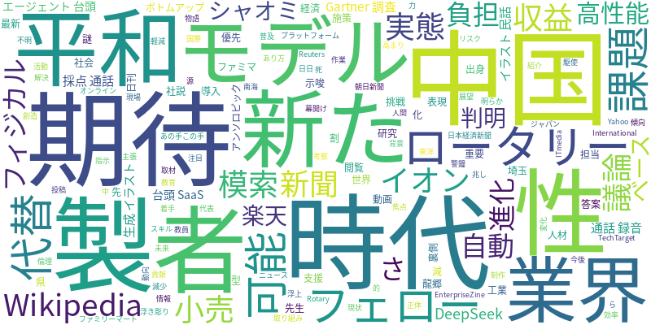

☁️ 今日のトレンドワード

📰 今日のピックアップニュース (10件)
AIで平和を創造：ロータリー平和フェローの挑戦
ロータリー平和フェローが、AI技術を駆使してより良い世界を築くための活動を紹介。AIの倫理的な活用や、国際社会の課題解決への貢献に焦点を当てる。
AI代替リスク9割？ Gartner調査が警鐘
Gartnerの調査により、指示された作業のみを行う人材の約90%がAIに代替される可能性が示唆された。AI時代におけるスキルの重要性が浮き彫りになる。
AI時代にWikipedia、収益源模索
AIの普及により閲覧者が減少傾向にあるWikipediaが、新たな収益モデルの模索に着手。AI時代における情報プラットフォームのあり方について議論を促す。
小売業界のAI活用：イオン×ファミマの挑戦
イオンとファミリーマートが、小売業界におけるAI活用の実態と課題について議論。ボトムアップ型で進められた施策の裏側と、今後の展望が語られる。
AI生成イラストで民話語る：新たな表現の可能性
龍郷出身の研究者が、AI生成イラストを用いて民話を語る動画を制作。幅広い活用が期待され、AIによる新たな物語表現の幕開けを示唆する。
AIが先生の負担減：採点・通話録音を自動化
埼玉県では、AIを活用して教員の負担軽減を目指す取り組みが進む。答案自動採点や通話録音へのAI導入により、教育現場の効率化が期待される。
フィジカルAIに期待：強さの先にある進化
日刊工業新聞の社説では、フィジカルAIへの優先支援を主張。単なる「強さ」を超えたAIの「進化」に期待を寄せ、その重要性を説く。
AIエージェント台頭、SaaSの未来は？
アンソロピックなどに代表されるAIエージェントの台頭により、SaaS業界に変化の兆し。日本企業がこの新時代にまず取り組むべきことが考察される。
謎の高性能AI、中国シャオミ製と判明
これまで正体不明だった高性能AIモデルが、中国のシャオミ製であることが判明。AI開発における技術力の高まりと、その動向が注目される。
楽天AI、中国DeepSeek製ベースか？
楽天の最新AIモデルが、中国DeepSeek製をベースにしている可能性が浮上。担当者への取材を通じて、その背景と実態が明らかになる。
本日のAI・テック業界は、AIの社会実装と倫理的課題、そしてビジネスへの影響が多岐にわたって報じられました。ロータリー平和フェローのようにAIを善意に活用する動きがある一方で、指示待ち人材の90%がAIに代替されるというGartnerの調査結果は、AI時代における人材育成の緊急性を示唆しています。WikipediaはAIによる閲覧者減少に直面し、新たな収益モデルを模索。小売業界ではイオンとファミマがAI活用の現状と課題を議論し、教育現場ではAIが教員の負担軽減に貢献する可能性が示されています。
また、AI生成イラストが民話という伝統的なコンテンツに新たな表現をもたらす可能性や、フィジカルAIの進化への期待も語られています。さらに、アンソロピックのようなAIエージェントの台頭はSaaS業界に大きな影響を与え、日本企業への対応策が問われています。一方で、シャオミ製やDeepSeek製といった中国企業による高性能AIモデルの登場は、グローバルなAI開発競争の激化を物語っています。これらのニュースは、AIが社会のあらゆる側面に浸透し、その恩恵と課題が日々進化し続けていることを浮き彫りにしています。